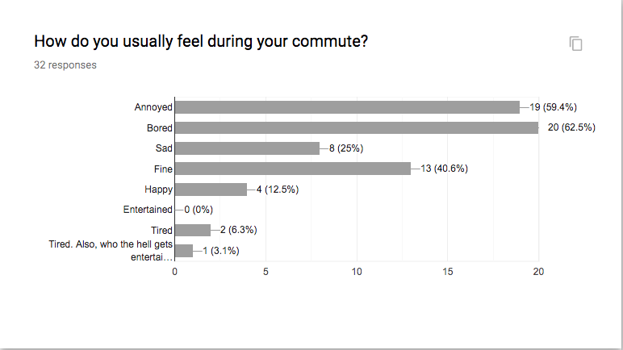
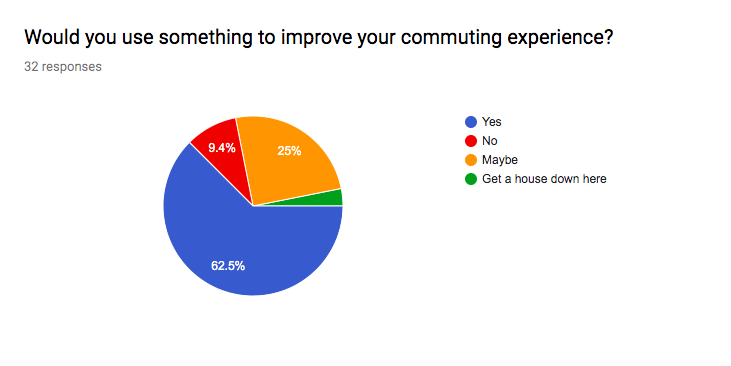

TaskBuddy aims to reduce stress and help alleviate depression in college commuters by providing a solution that helps users manage their everyday schedule between work, school, and life.
Taskbuddy is a multimdia product designed by my group and I. It is an app and a mood sensing wristband. The app is a task managemnt app that uses the emotional data from the wristband to plan the user's day and improve the users mood.
Research shows that commuters do not typically enjoy their commute. They feel it is wasted and unproductive time in their day.
Commuters also responded that they would be interested in something to improve their commute experience.
From our research it is clear that commuting contributes to depression. Taskbuddy aims to fill this emotional hole in commuters' day.
This multimedia solution will help commuters and all college students manage their stress, improve their mood, and plan their day efficiently.
The TaskBuddy Wristband is a mood sensing wristband that collects and sends real time emotional data to the app.
The wristband contains sensor measures for movements, blood volume pressure, heart beats, skin temperature, and galvanic skin response.
The wristband also has an alarm feature for tasks can that can set the band to vibrate or ring while the user is wearing it. The leftmost button turns the alarm on and off and the rigthmost button turns the wristband on and off.
This app is a task management app designed to work with the wristband. The app is still functional without the wristband, but will not be able to offer information about emotional data.
This page is the home page of Taskbuddy. From this page users can view their schedule, view transportation updates for their commute, view their weekly staistics created from the wristband data, visit the 'brain break' section, and add a new task.
On the Add Task page users can add a task, event, or travel. Events are things like classes or meetings, something scheduled at a specific time in the users day. Tasks are things like homework, something that has a due date but no specific meeting time. Adding travel allows Taskbuddy to keep the user updated on their specific form of travel.
On the My Schedule page users can see their daily schedule laid out by TaskBuddy. Events and transportation are built into the day. Tasks are suggested during free time based on preference and emotional data. On the right side is emotional data from the wristband that has been tracked throughout the day.
The Brain Break page is available for users when they need a break. This could be anytime throughout their day. The content on this page is suggested based off user preference as well as the current mood of the user.
View a clickable prototype of TaskBuddy.
This concludes the information on TaskBuddy
Thank you for taking the time to learn about this product. If you would like more informaton on TaskBuddy or have an interest in developing it please Contact me.